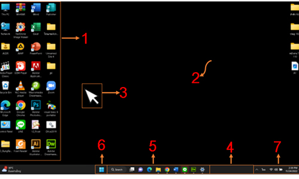
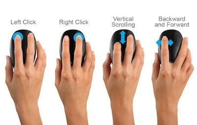

2. ส่วนประกอบหน้าจอวินโดวส์ (Desktop : เดสก์ท็อป)
ส่วนประกอบของหน้าจอวินโดวส์ หรือเดสก์ท็อป คือหน้าจอที่เป็นศูนย์กลางในการทำงานของโปรแกรมเมื่อมีการเรียนใช้งาน
โปรแกรมใดก็ตาม โปรแกรมที่เรียกขึ้นมาใช้งานจะปรากฏขึ้นบนหน้าจอวินโดวส์นี้ บนหน้าจอวินโดวส์จะประกอบไปด้วยส่วนประกอบดังนี้

1. ไอคอน (Icon) รูปภาพเล็ก ๆ ซึ่งใช้แทนโปรแกรมหรือเอกสาร
2. เดสก์ท็อป (Desktop) พื้นที่ว่าง ๆ ทั้งหมดบนจอภาพ
3. ตัวชี้เมาส์ (Mouse Pointer) เป็นสัญลักษณ์รูปลูกศร ใช้แสดงการเคลื่อนที่ของเมาส์บนจอภาพ
4. ทาสก์บาร์ (Taskbar) เป็นแถบที่ใช้แสดงรายชื่อโปรแกรมที่เปิดใช้งานอยู่ ในเวลาปัจจุบัน
5. ปุ่มแอปที่ตรึงไว้ (Pinned Apps) ใช้สำหรับการเปิดโปรแกรมที่ใช้งานบ่อย ๆ โดยสร้างทางลัดไว้บนทาสก์บาร์
6. ปุ่มสตาร์ท (Start) คือ เมนู หรือปุ่มที่ใช้ในการเรียกใช้เครื่องมือทุกอย่างของการใช้งานและเข้าสู่โปรแกรมต่าง ๆ
7. พื้นที่แสดงการแจ้งเตือน (Notification Area) สถานะการทำงาน เช่น วัน เวลา ภาษา เสียง เครือข่าย เป็นต้น
3.การใช้เมาส์และตัวชี้เมาส์
การเลือกสิ่งต่าง ๆที่ปรากฏอยู่ในหน้าจอวินโดวส์ การใช้เมาส์จะเป็นเครื่องมือหลักในการทำงาน ลักษณะเมาส์ในปัจจุบันโดยทั่วไปจะมีปุ่ม 3 ปุ่ม คือ ปุ่มด้านซ้าย ปุ่มด้านขวา และปุ่มลูกกลิ้ง
วิธีการจับเมาส์ที่ถูกต้อง

การจับเมาส์ถูกวิธี นอกจากจะช่วยให้ไม่ให้ปวด และบาดเจ็บที่ข้อมือแล้ว ยังทำให้เราใช้งานเมาส์ได้ง่าย และสบายขึ้นอีกด้วย
1.วางมือ และแขนให้รู้สึกสบาย โดยวางทั้งมือ และแขนให้ขนานเป็นเส้นตรง และวางอยู่ในระดับเดียวกัน
2.วางตำแหน่งเม้าส์บนโต๊ะทำงานให้เหมาะสม ไม่วางเมาส์บนโต๊ะที่เล็กหรือแคบจนเกินไป
3.ควรจับเมาส์ในลักษณะหลวม ๆ อย่าบีบหรือจับเมาส์แน่นเกินไป จับเมาส์เบา ๆ
4.เลือกเมาส์ให้เหมาะกับขนาด และข้อมือของเรา ที่สำคัญจับถนัดมือกับลักษณะการใช้งาน
5.เลื่อนเมาส์ โดยการขยับแขน และใช้ข้อศอกเป็นจุดหมุน อย่าบิดข้อมือขึ้น ลง หรือไปด้านข้าง
6.สัมผัสเบา ๆ เมื่อคลิกปุ่มเมาส์ และปล่อยนิ้วมือสบาย ๆ ไม่ต้องเกร็งนิ้วมือให้ลอยค้างอยู่เหนือปุ่ม
7.เมื่อไม่จำเป็นต้องใช้เมาส์ อย่าจับเมาส์ค้างไว้
|